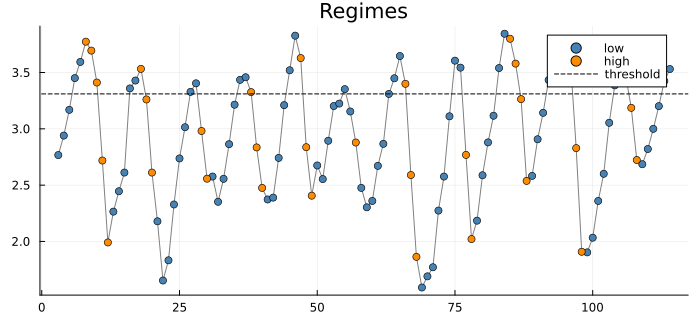
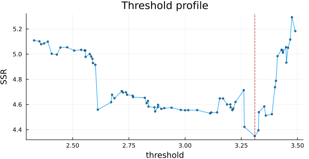
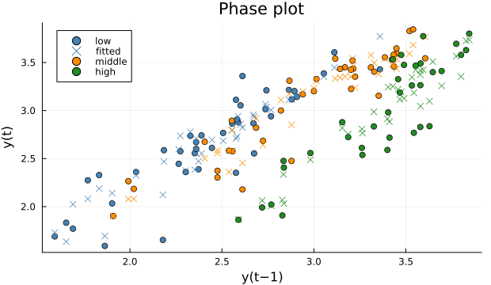
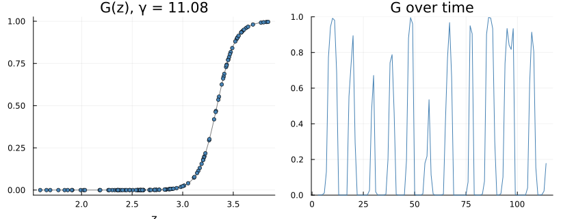
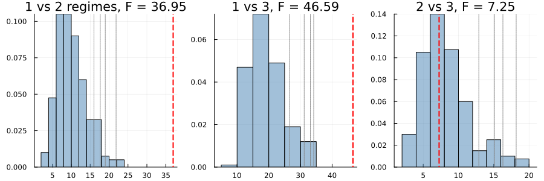

Threshold and Smooth-Transition Models
A threshold autoregression fits a different autoregression on each side of a line. Which side applies is decided by an observed variable — usually the series' own value a few periods back — crossing a threshold that is estimated. When the switch is abrupt the model is a SETAR (self-exciting threshold autoregression); when it is a smooth function of the distance from the threshold, an LSTAR (logistic smooth-transition autoregression). Compare Regime Switching, where the regime is hidden and follows its own chain.
The primary textbook treatment is Tsay (2010, §4.1.2 for TAR and §4.1.3 for smooth transition); Shumway & Stoffer (2017, §5.4, printed pp. 261–265, PDF 271–275) fit a SETAR to influenza mortality. Of the six textbooks this project checks against, only Tsay covers smooth transition.
thDelay = d means the threshold variable is z_t = y_{t−(d+1)} — thDelay = 0 is the previous value — as in R's tsDyn, so its numbers can be checked directly. The low regime is z_t ≤ th, inclusive. Tsay writes the threshold as γ_j, r₁ and γ₁, γ₂ in different chapters, and his regime boundary is inclusive on different sides in different chapters, so check which a formula uses.
SETAR: the Canadian lynx
The classic example (Tong & Lim 1980): annual lynx trappings, 1821–1934, in log10.
using TSAnalytics, Plots, DelimitedFiles, Random
y = log10.(readdlm(TSAnalytics.LYNX, ',', skipstart = 1)[:, 2])
m = fit_setar(y, 2; thDelay = 1)SETAR model, 2 regimes, m = 2, thDelay = 1 (z_t = y_{t-2}), rows = 112
threshold: 3.3100557377508912 (searched)
const.L 0.5884369293 se 0.144652
phiL.1 1.264279284 se 0.065869
phiL.2 -0.4284292116 se 0.0782145
const.H 1.165691948 se 0.884837
phiH.1 1.59925407 se 0.109989
phiH.2 -1.01157549 se 0.2675
regime sizes: 78 / 34
SSR = 4.3481912792 AIC = -349.8588 (no standard error for the threshold: its distribution is non-standard)Two AR(2)s, switched by the value two years earlier. Fitting it also logs a warning, and the warning is right: the high regime's autoregression has complex roots of modulus 1/√(−φ_{H,2}),
println("high-regime root modulus: ", round(1 / sqrt(-m.coef[6]), digits = 4))high-regime root modulus: 0.9943inside the unit circle — on its own that regime would not be stationary. The model as a whole is, because the series cannot stay above the threshold: high values lead, through the high regime's sharply negative second coefficient, to a crash. That is the population cycle.
The threshold is found by trying every observed value of z in the middle 70% of its sorted values (trim = 0.15 at each end) and keeping the one with the smallest sum of squares. It has no standard error: its sampling distribution is not normal (Hansen 2000), and none is printed rather than a misleading one. The display prints it to full precision because the twelve-digit version typed back in moves the one observation that sits exactly on it into the other regime and changes the fit.
plot(threshold_regime_plot(m); size = (700, 320))
Each year coloured by the regime its value two years earlier put it in — which is why a year above the line can be "low".
plot(threshold_profile(m); size = (620, 320))
The search criterion at every candidate. The minimum is sharp, but the profile is ragged, which is the reason the threshold's distribution is non-standard.
Choosing the delay and orders
select_setar searches over the delay and both regimes' orders as well as the threshold, scoring each by tsDyn's pooled AIC:
s = select_setar(y, 2; thDelay = 0:1)
println(length(s.table), " fits; best: ", s.best)600 fits; best: (thDelay = 1, mL = 2, mH = 2, th = 3.3100557377508912, value = -32.076526795592315)The best is the model above: delay 1, AR(2) in both regimes. Orders can differ by regime (mL, mH) or skip lags (ML = [1, 3]), and nthresh = 2 adds a middle regime, found by the same sequential search tsDyn uses:
m3 = fit_setar(y, 2; thDelay = 1, nthresh = 2, warn = false)
plot(threshold_phase_plot(m3); size = (620, 360))
The phase plot — this year against last year — coloured by the three regimes, with the fitted values as crosses. (tsDyn does not draw it for three regimes.)
LSTAR: a smooth switch
The LSTAR replaces the step with a logistic curve, G(z) = 1 / (1 + exp(−γ (z − th))), and fits
\[y_t = X_t' \phi_L + (X_t' \phi_H)\, G(z_t) + \varepsilon_t\]
— an additive form: φ_H are increments, so the high regime's coefficients are φ_L + φ_H. Tsay writes exactly this (2010, Eq. 4.15, printed p. 184, PDF 211) and, alone among the textbooks, spells out the translation on the next page. The convex form (1 − G) φ_L + G φ_H is a different model: on the lynx data, at the same estimates, its sum of squares is 67 times larger. Tsay also writes the slope as a scale s with (z − th)/s, so his s is roughly 1/γ here.
l = fit_lstar(y, 2; thDelay = 1)LSTAR model, m = 2, thDelay = 1, rows = 112 (additive form: the high regime's coefficients are phiL + phiH)
const.L 0.4880827826 se 0.204577
phiL.1 1.246558495 se 0.0678951
phiL.2 -0.3660004162 se 0.104146
const.H -1.037615822 se 2.43892
phiH.1 0.4237877921 se 0.172772
phiH.2 -0.2517436119 se 0.587144
gamma 11.07654335 se 9.83115
th 3.339635365 se 0.0935898
SSR = 4.33764090727plot(transition_plot(l); size = (820, 320))
γ ≈ 11 on the raw scale of log10 lynx: the transition happens over about a third of a unit, nearly a step. Its standard error is almost as large as the estimate, which is the usual state of γ — the likelihood is nearly flat in it. A γ that runs to the top of the starting grid is reported (gamma_at_bound), because then the data want a step and a SETAR is the better model.
Is there a threshold at all?
Hansen's (1999) test compares a linear AR with one and two thresholds. The threshold is not identified under the linear null, so the statistic has no standard distribution and the p-values come from a bootstrap:
t = setar_test(y, 2; thDelay = 0:1, nboot = 200, rng = MersenneTwister(1))Hansen (1999) threshold tests, bootstrap with 200 replications, rows = 112
SSR: AR = 5.782580842, SETAR(1) = 4.348191279, SETAR(2) = 4.083800414
1 vs 2: F = 36.9468, bootstrap p = 0.0
1 vs 3: F = 46.5898, bootstrap p = 0.0
2 vs 3: F = 7.251, bootstrap p = 0.57
(no asymptotic p-value: the null distribution is non-standard)plot(t; size = (900, 300))
The bootstrap distribution of each statistic, the observed value in red and the critical values in grey. No χ² curve is drawn: the test has no asymptotic distribution to draw. One threshold beats none decisively; a second adds little. tsDyn's default of ten bootstrap draws cannot give a stable p-value; the default here is a thousand.
India: a threshold that is one episode
Year-on-year growth of the Index of Industrial Production, with the threshold on its own lag. The test on the whole sample, and on the months before the pandemic:
using Dates
iip = dataset("iip_india")
yi = 100 .* (log.(iip.value[13:end]) .- log.(iip.value[1:(end - 12)]))
pre = iip.date[13:end] .< Date(2020, 3, 1)
full = setar_test(yi, 2; thDelay = 0:1, nboot = 500, rng = MersenneTwister(1))
before = setar_test(yi[pre], 2; thDelay = 0:1, nboot = 500, rng = MersenneTwister(1))
println("bootstrap p-values, 1 vs 2 / 1 vs 3 / 2 vs 3")
println(" 2012-2026: ", round.(full.pvalues, digits = 3))
println(" before 2020-03: ", round.(before.pvalues, digits = 3))bootstrap p-values, 1 vs 2 / 1 vs 3 / 2 vs 3
2012-2026: [0.044, 0.006, 0.008]
before 2020-03: [0.396, 0.26, 0.218]On the full sample the test finds strong evidence of thresholds; before March 2020 it finds none. The nonlinearity is the pandemic — a collapse and a rebound so large that any model with a separate regime for extreme values fits them better — not an asymmetry in India's ordinary industrial cycle. A threshold test answers "is a linear AR adequate?", and one extraordinary episode is enough to make the answer no. Ask it of the period you mean to model.
See also
- API: Threshold Models
- Regime Switching — regimes from a hidden Markov chain
- Coming from R or Python —
tsDyn's conventions, and where its numbers differ